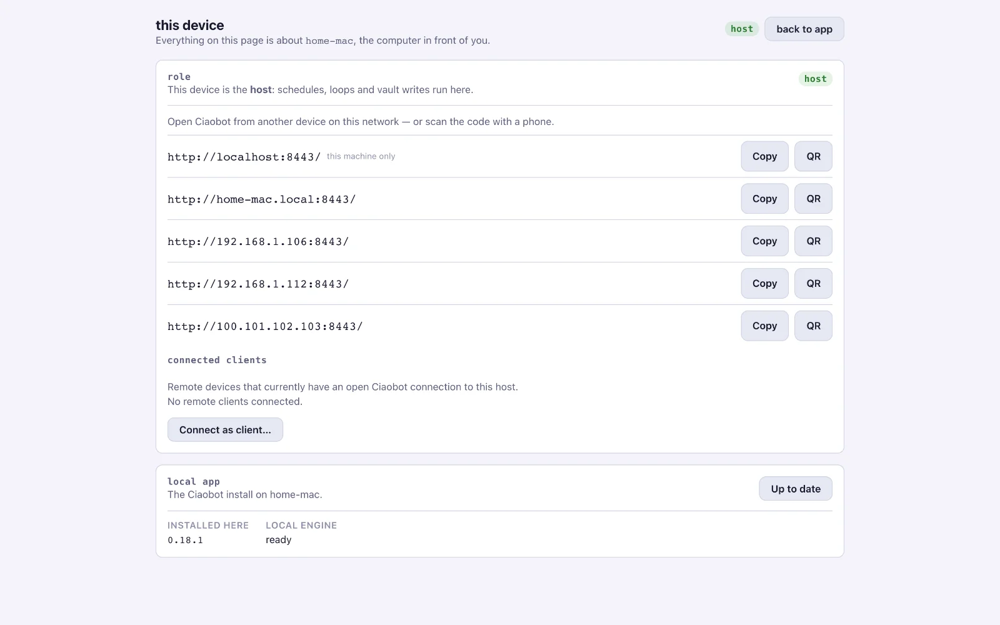

Advanced
Use it from anywhere
Run Ciaobot on one computer, the host, and use it from your phone, tablet or laptop. The host can be your Mac at home or a small rented server. Your notes, memory and AI sessions stay on the host; the other devices are just windows onto it.
A good host is a computer that is usually on: a Mac mini at home, a desktop, or a small Linux server in the cloud. Scheduled tasks run on the host, so it needs to be awake for them to fire on time.
💻 A Mac at home
The one-line install and the menu bar app. Needs to stay awake for schedules.
☁️ A VPS in the cloud
Always on and reachable from anywhere, for a few euros a month. How →
Step 1: connect your devices with Tailscale
Tailscale is a free app that links your devices into a private network. They can reach each other from anywhere, but nobody else on the internet can see them. No router settings needed.
-
Install Tailscale on the host
Download it from tailscale.com/download and sign in.
-
Install it on every other device
On your phone, tablet and laptop, install Tailscale and sign in with the same account.
-
Find the host's address
In Ciaobot on the host, open Settings → Home. The this device section lists the addresses where Ciaobot can be reached, each with a Copy and a QR button. The Tailscale address starts with
100., for examplehttp://100.101.102.103:8443.
Settings → Home → this device. The host lists its addresses; scan the QR code with your phone.
{kind=link}
Step 2a: use it from a phone, tablet or any browser
Nothing to install besides Tailscale. Open the host's address in the browser (or scan the QR code), log in with your Ciaobot password, and you're in, with all your workspaces, chats and memory.
Make it feel like an app: on iPhone or iPad, tap Share → Add to Home Screen; on Android, use Install app in the browser menu.
Optional: a secure https address. Browsers enable some app features (installing to the home screen, notifications) only over https. Tailscale can provide one. On the host, run:
tailscale serve --bg 8443Then use the https://<host-name>.<your-tailnet>.ts.net address it prints. The first time, Tailscale may ask you to enable HTTPS for your network in its admin page.
Step 2b: use it from a second Mac
If Ciaobot is also installed on your laptop, you can switch that laptop to client mode. It then shows the host's workspaces, chats and settings, with the menu bar and keyboard shortcuts of the desktop app.
-
Make sure the host has a password
You set one during setup. You can change it in Settings → Home on the host.
-
On the laptop, choose Connect as client
Open Settings → Home → this device and click Connect as client…. Enter the host's Tailscale address (for example
http://100.101.102.103:8443) and the host's password, then click Connect. -
That's it
The laptop pauses its own automations and everything runs on the host. A banner shows that you're connected as a client.
To switch back, open this device again and click Disconnect.
Keep it private
- Always set a strong dashboard password. It protects Ciaobot on every network it's reachable from.
- Use Tailscale (or another private network) rather than opening port
8443on your router to the whole internet.
Run it on a server (VPS)
A VPS is a small computer you rent in a data centre: always on, so automations run on time even with your laptop closed. Any provider that offers Ubuntu 24.04 works; for example a Hostinger VPS. A small plan is fine for one person.
-
Rent the server
Choose Ubuntu 24.04 as the operating system and note the server's address and the login the provider gives you.
-
Put it on your private network
-
Install Ciaobot and an AI tool
The server install is a few terminal commands: create a dedicated user, install Ciaobot, then sign in to Claude Code or opencode as that user. docs/LINUX.md lists every command, including running Ciaobot as a background service that starts on boot.
Not comfortable in a terminal? Open a chat with Claude Code or opencode on your laptop, give it the link todocs/LINUX.mdand your server's address, and let it walk you through (or do) the setup. -
Open it from anywhere
Continue with Step 2a, including the https address.
What's different on a server: updates are installed by you rather than with one click. Everything else works the same.